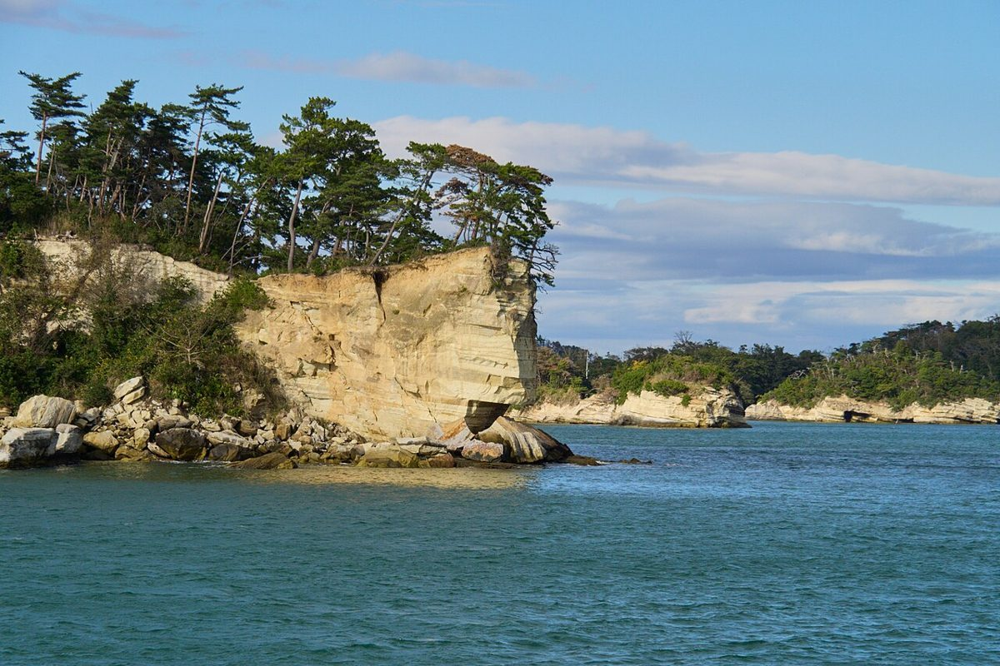
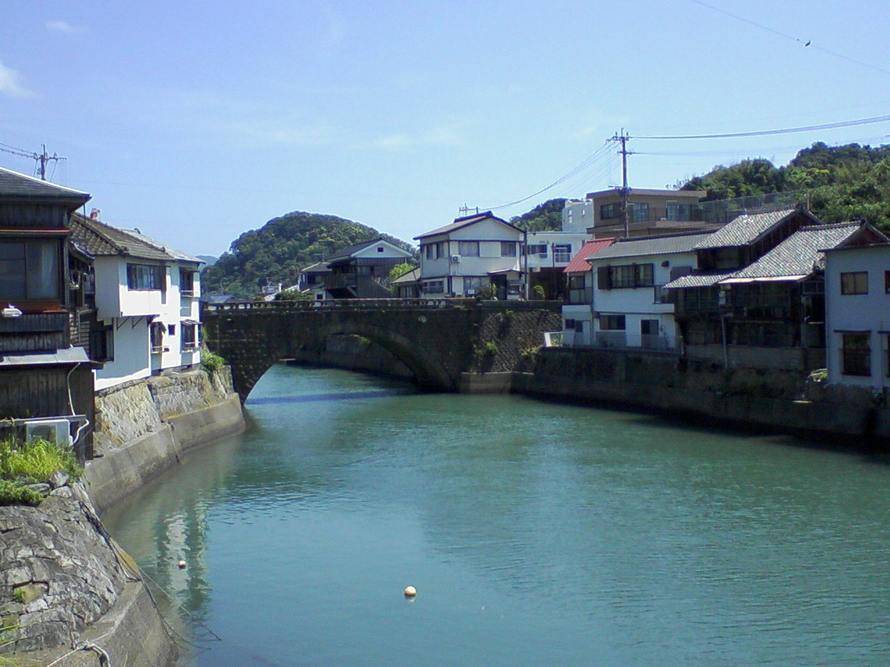

About
お店について
屋号「はいからや」の語感と、確認できているお店の情報です。
屋号に思うこと
ハイカラ
高い襟(ハイカラー)から、西洋風で洒落たものを指す言葉になったといわれます。
はいからや
その語感どおり、親しみやすさと少しの晴れやかさを感じる屋号です。
石巻店
石巻市山下町1丁目にお店があります。詳細は確認が取れ次第ご案内します。

松の生える岬(宮城県松島湾・石巻市外のフリー素材のイメージ)

運河に架かる石の橋(宮崎県日南市・他地域のイメージ)
基本情報
- 店名
- はいからや 石巻店
- 所在地
- 〒986-0873
宮城県石巻市山下町1丁目5-20 - 電話
- 0225-25-7080
- haikarayaisinomaki
- 営業時間
- 準備中
- 定休日
- 準備中